Character Design • Children’s Publishing • Brand Applications
Sticky Paws
Sticky Paws began during a conversation with Robert Strickland at Barnes & Noble. In less than thirty minutes, the spark of a raccoon character built around honesty, integrity and strong values was born.
Character and Story World
The project grew into a cast of characters, a published book, interior illustrations, web concepts, stickers, apparel and promotional materials.
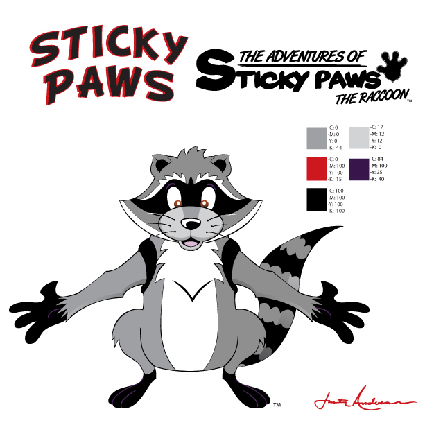
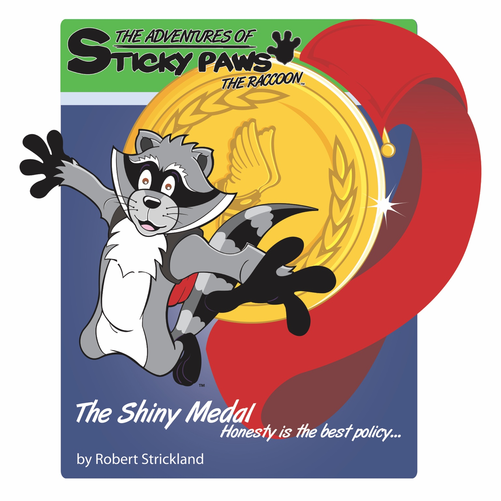
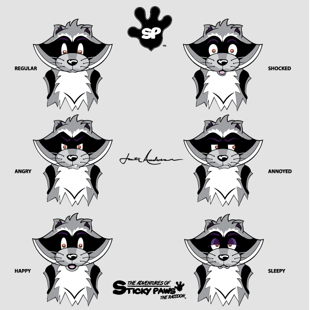
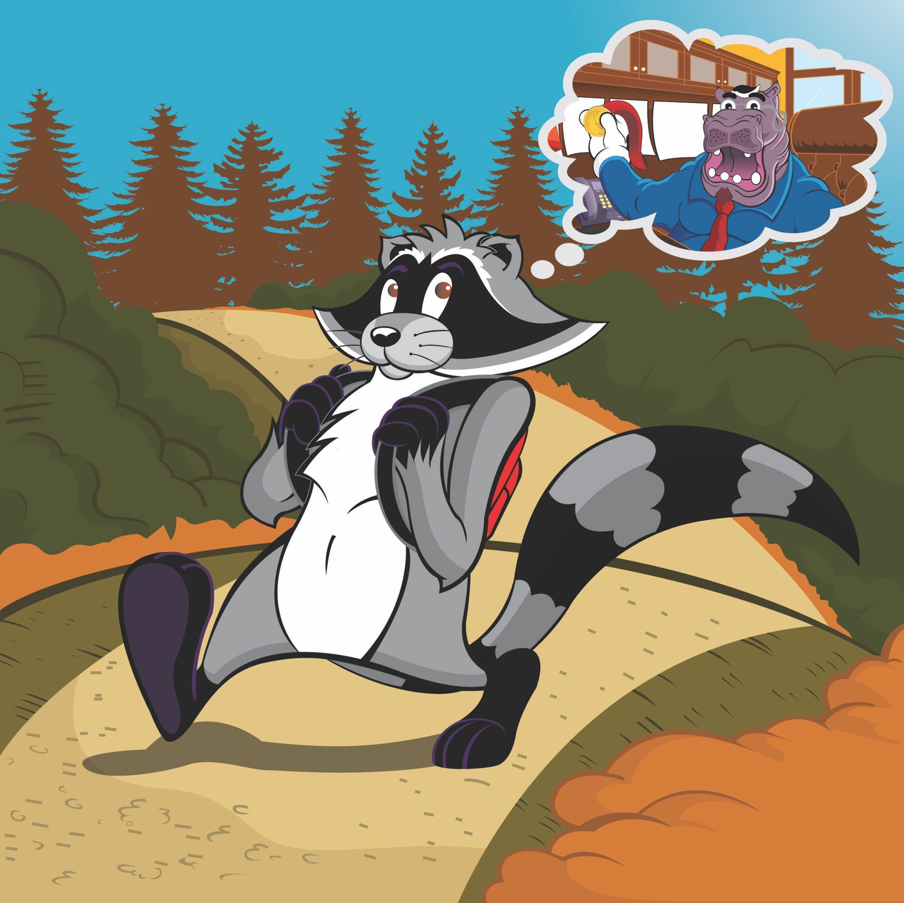
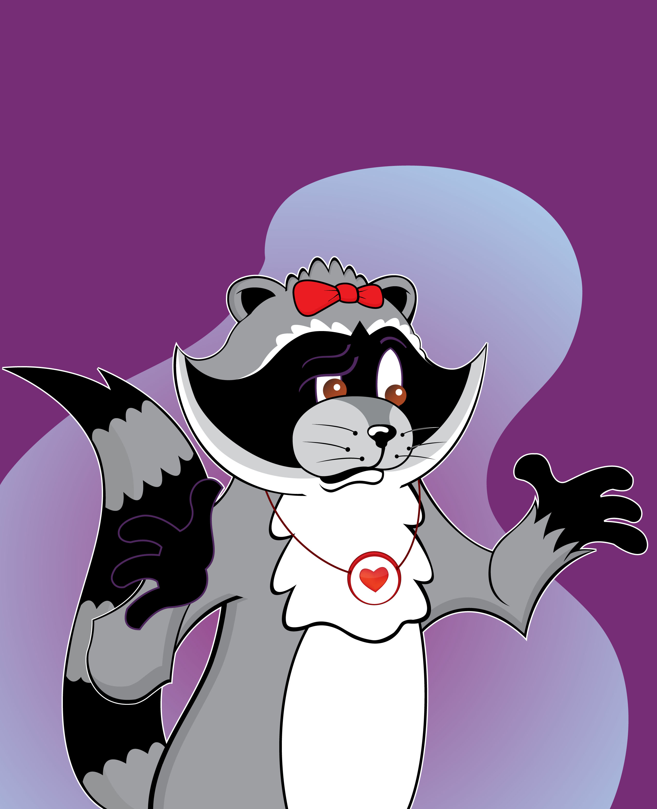
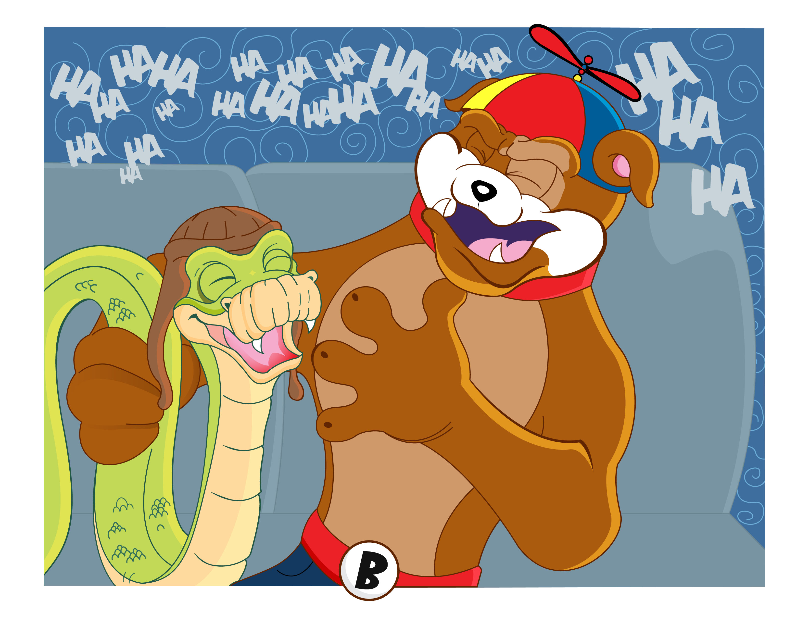
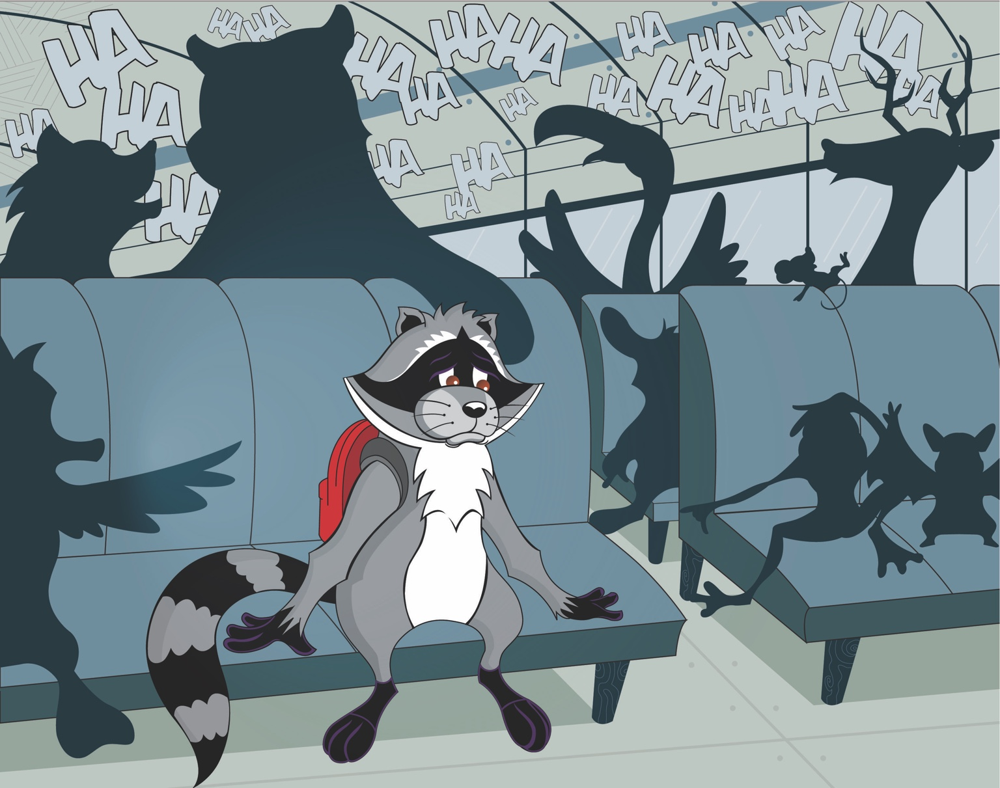
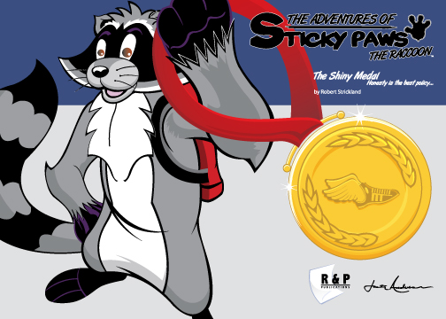
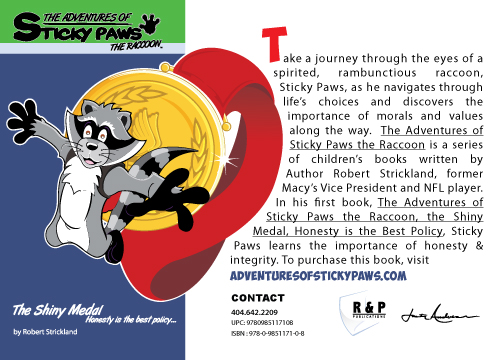
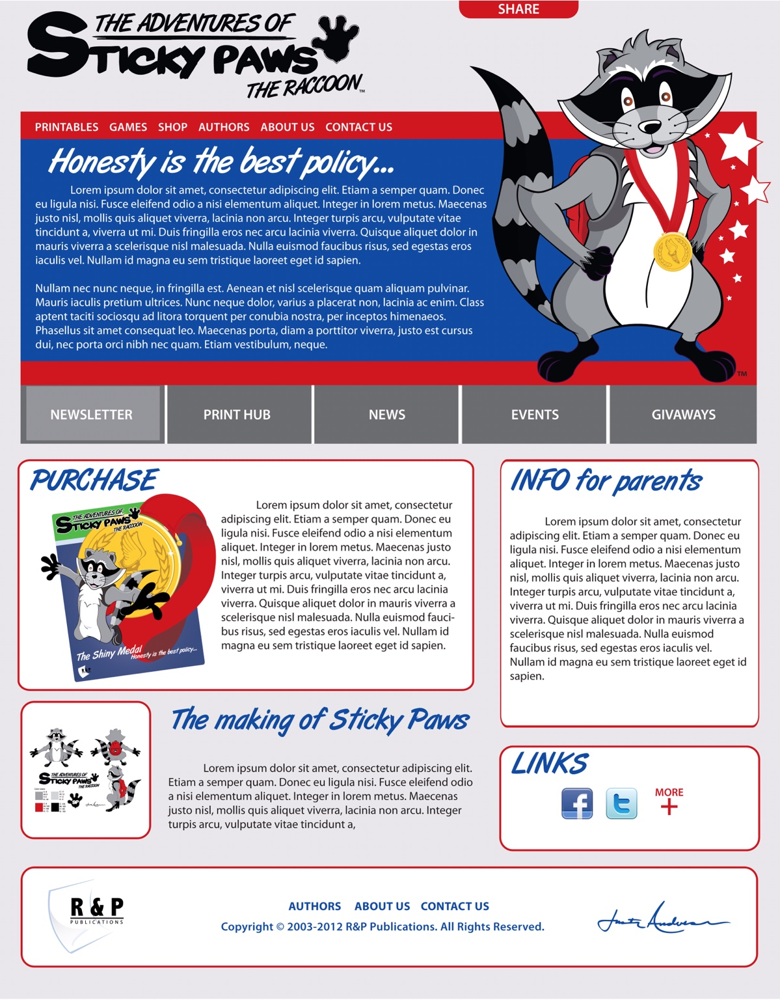
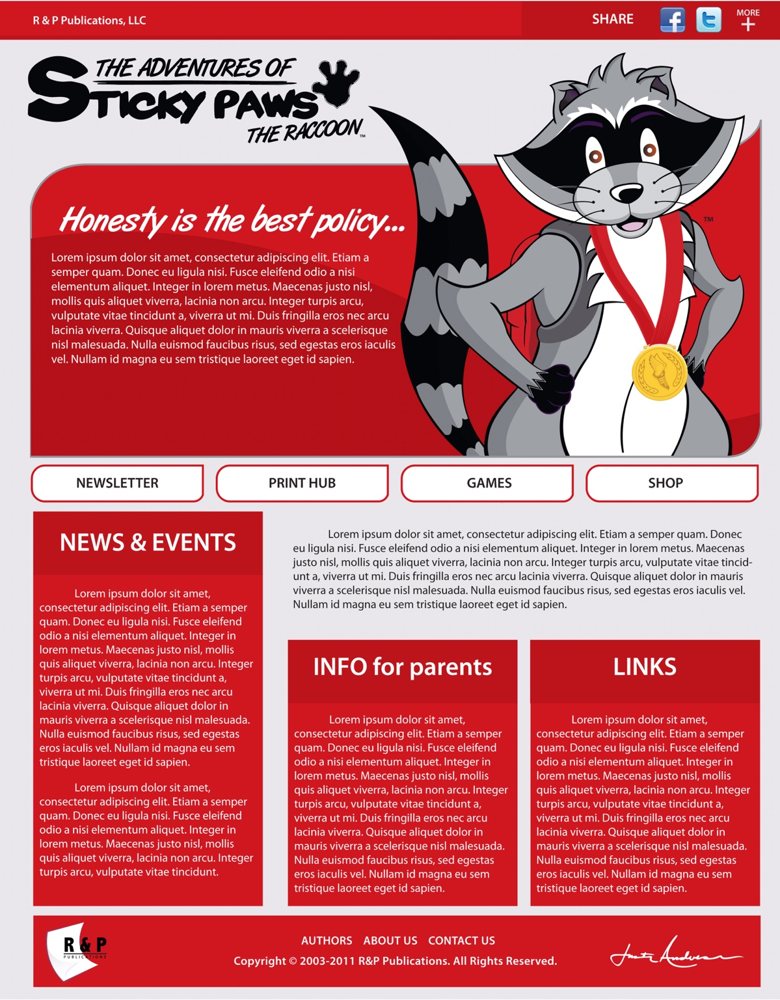
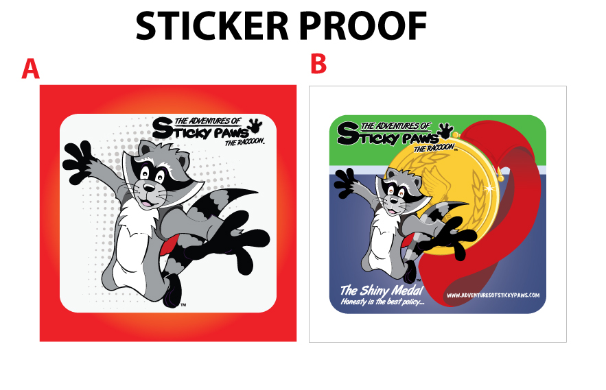
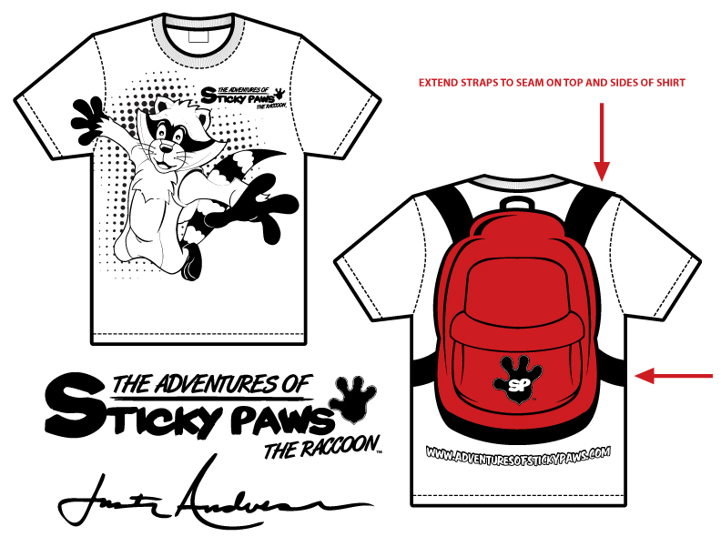